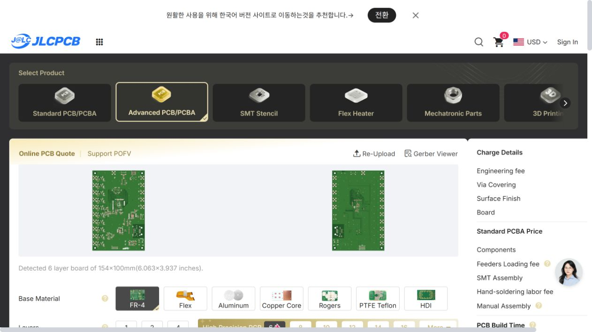
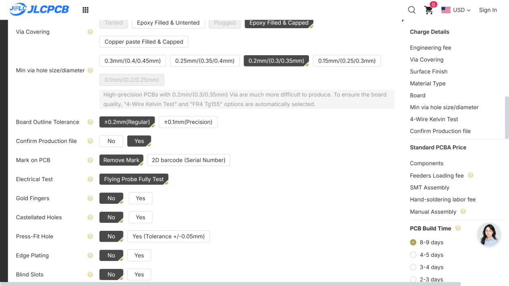

| 부품 | 정확 품번 | 정격·검토 |
|---|---|---|
| R197 | RCS04024R70FKED | 4.7 ohm / 0402 / 1% / 100 ppm/K / 0.2 W; JLC stock 2619 |
| R200 | RCS04024R70FKED | 4.7 ohm / 0402 / 1% / 100 ppm/K / 0.2 W; same part as R197 |
| R201 | 0402WGF120KTCE | 1.2 ohm / 0402 / 1% / 400 ppm/K / 0.0625 W; TCR retained in prior circuit analysis |
| R202 | PTFR0402B14K7N9 | 14.7 kohm / 0402 / 0.1% / 10 ppm/K / 0.06 W |
| R203 | PTFR0402B9K31N9 | 9.31 kohm / 0402 / 0.1% / 10 ppm/K / 0.06 W; JLC stock 501 |
품번과 정격의 대조 결과이며, 사용자 정의 라이브러리 경고를 없앴다는 뜻은 아닙니다. R201의 400 ppm/K는 앞선 회로 검토에 반영되어 있습니다.
보드당 BOM 69그룹·412개 = Top333 + Bottom79. DNP 6개(C33/R61/R64/R98/R125/R126)와 베어 테스트 패드 19개는 제외했습니다. 437행의 native CPL은 실장 입력 파일로 쓰지 마세요.
2026-10-19 JLCEDA의 LCSC Stock/SMT Stock 중 SMT 열을 확인했습니다. 재고 예약과 공장 매칭 승인은 별도입니다.
| MPN | JLC/LCSC 코드 | 보드당 수량 | JLC 실장 재고 | 상태 |
|---|---|---|---|---|
| GRM1555C1E103JE01D | C3855387 | 31 | 97,872 | 예약 안 됨 |
| RT0402BRD074K02L | C852810 | 10 | 8,715 | 예약 안 됨 |
| RT0402BRD073K32L | C852762 | 10 | 18,757 | 예약 안 됨 |
| 0402WGF470JTCE | C25118 | 10 | 1,896,308 | 예약 안 됨 |
| CL05B104KO5NNNC | C1525 | 31 | 29,094,842 | 예약 안 됨 |
| RT0402BRD07100KL | C852472 | 10 | 980,937 | 예약 안 됨 |
| PTFR0402B2K80P9 | C2692906 | 10 | 5,939 | 예약 안 됨 |
| RCS04024R70FKED | C2103244 | 2 | 2,619 | 예약 안 됨 |
| RT0402BRD0715K4L | C852543 | 1 | 19,025 | 예약 안 됨 |
| RT0402BRD0710KL | C190095 | 1 | 629,639 | 예약 안 됨 |
| 0402WGF120KTCE | C44198 | 1 | 6,941 | 예약 안 됨 |
| PTFR0402B14K7N9 | C2693067 | 1 | 5,157 | 예약 안 됨 |
| PTFR0402B9K31N9 | C2692924 | 1 | 501 | 예약 안 됨 |
| RT0402FRD071KL | C4137342 | 1 | 9,416 | 예약 안 됨 |
| CL21B475KOFNFNE | C3039701 | 10 | 5,794 | 예약 안 됨 |
| CL10B105KO8NNNC | C59782 | 2 | 241,421 | 예약 안 됨 |
| 부품 | 품번 | CPL 회전 | 기준 | 공장 최종 확인 |
|---|---|---|---|---|
| CN1 | PJ-051BH | 180 | Yes | Confirm in exact part placement preview against numbered pad drawing. |
| CN2 | LPJE101-0AHN | 0 | Purchased-part zero pending | Confirm exact connector outline, pin 1 and mating direction from drawing; hand-insert to original board side. |
| CN3 | USB4105-GF-A | 90 | Yes | Confirm in exact part placement preview against numbered pad drawing. |
| CN4 | USB4105-GF-A | 180 | Yes | Confirm in exact part placement preview against numbered pad drawing. |
| D1 | ESD8351XV2T1G | 90 | Yes | Confirm in exact part placement preview against numbered pad drawing. |
| D2 | WR148SR-W | 270 | Purchased-part zero pending | Exact WR148SR-W source or qualified replacement must map its cathode mark to board pad 1. Factory derives tape rotation from supplied part. |
| D3 | WR148SR-W | 270 | Purchased-part zero pending | Exact WR148SR-W source or qualified replacement must map its cathode mark to board pad 1. Factory derives tape rotation from supplied part. |
| D4 | WR148SR-W | 270 | Purchased-part zero pending | Exact WR148SR-W source or qualified replacement must map its cathode mark to board pad 1. Factory derives tape rotation from supplied part. |
| D5 | SMBJ6.5CA | 270 | Yes | Confirm in exact part placement preview against numbered pad drawing. |
| D6 | WR148SR-W | 180 | Purchased-part zero pending | Exact WR148SR-W source or qualified replacement must map its cathode mark to board pad 1. Factory derives tape rotation from supplied part. |
| J1 | FTSH-107-01-L-DV-K-A | 0 | Yes | Confirm in exact part placement preview against numbered pad drawing. |
| J2 | SMA-KWE901 | 90 | Yes | Confirm in exact part placement preview against numbered pad drawing. |
| J3 | SMA-KWE901 | 90 | Yes | Confirm in exact part placement preview against numbered pad drawing. |
| J4 | SMA-KWE901 | 90 | Yes | Confirm in exact part placement preview against numbered pad drawing. |
| J5 | SMA-KWE901 | 90 | Yes | Confirm in exact part placement preview against numbered pad drawing. |
| J6 | SMA-KWE901 | 90 | Yes | Confirm in exact part placement preview against numbered pad drawing. |
| J7 | SMA-KWE901 | 90 | Yes | Confirm in exact part placement preview against numbered pad drawing. |
| J8 | SMA-KWE901 | 90 | Yes | Confirm in exact part placement preview against numbered pad drawing. |
| J9 | SMA-KWE901 | 90 | Yes | Confirm in exact part placement preview against numbered pad drawing. |
| J10 | SMA-KWE901 | 90 | Yes | Confirm in exact part placement preview against numbered pad drawing. |
| J11 | SMA-KWE901 | 90 | Yes | Confirm in exact part placement preview against numbered pad drawing. |
| J12 | SMA-KWE901 | 270 | Yes | Confirm in exact part placement preview against numbered pad drawing. |
| J13 | SMA-KWE901 | 270 | Yes | Confirm in exact part placement preview against numbered pad drawing. |
| J14 | SMA-KWE901 | 270 | Yes | Confirm in exact part placement preview against numbered pad drawing. |
| J15 | SMA-KWE901 | 270 | Yes | Confirm in exact part placement preview against numbered pad drawing. |
| J16 | SMA-KWE901 | 0 | Yes | Confirm in exact part placement preview against numbered pad drawing. |
| J17 | SMA-KWE901 | 270 | Yes | Confirm in exact part placement preview against numbered pad drawing. |
| J18 | PPTC052LFBN-RC | 0 | Purchased-part zero pending | Confirm exact connector outline, pin 1 and mating direction from drawing; hand-insert to original board side. |
| Q1 | 9013M | 0 | Yes | Confirm in exact part placement preview against numbered pad drawing. |
| SW1 | GT-TC089B-H075-L1 | 0 | Yes | Confirm in exact part placement preview against numbered pad drawing. |
| TR1 | KMS-1102NL | 270 | Yes | Confirm in exact part placement preview against numbered pad drawing. |
| TVS1 | USBLC6-4SC6 | 270 | Yes | Confirm in exact part placement preview against numbered pad drawing. |
| TVS2 | USBLC6-2SC6 | 270 | Yes | Confirm in exact part placement preview against numbered pad drawing. |
| TVS3 | USBLC6-2SC6 | 0 | Yes | Confirm in exact part placement preview against numbered pad drawing. |
| U1 | STM32H747XIH6 | 90 | Yes | Confirm in exact part placement preview against numbered pad drawing. |
| U2 | LD1117S18TR | 0 | Yes | Confirm in exact part placement preview against numbered pad drawing. |
| U3 | ST1L05CPU33R | 270 | Yes | Confirm in exact part placement preview against numbered pad drawing. |
| U4 | IS42S32160F-6BLI | 0 | Yes | Confirm in exact part placement preview against numbered pad drawing. |
| U5 | LAN8742A-CZ-TR | 270 | Yes | Confirm in exact part placement preview against numbered pad drawing. |
| U6 | STS5PF30L | 90 | Purchased-part zero pending | Resolve obsolete part sourcing or approve a separately reviewed substitute; verify purchased tape pin-1 orientation against drawing before assembly. |
| U7 | USB3320C-EZK | 270 | Yes | Confirm in exact part placement preview against numbered pad drawing. |
| U8 | CH340C | 90 | Yes | Confirm in exact part placement preview against numbered pad drawing. |
| X1 | ECS-3225MV-250-CN-TR | 180 | Yes | Confirm in exact part placement preview against numbered pad drawing. |
| X2 | ECS-3225MV-240-CN-TR | 180 | Yes | Confirm in exact part placement preview against numbered pad drawing. |
| Y1 | NX3215SA-32.768KHZ-EXS00A-MU00466 | 0 | Yes | Check custom hand-solder land coverage against NDK NX3215SA dimensions; do not change orientation by 90 degrees. |
| U10 | OPA320AIDBVR | 180 | Yes | Confirm in exact part placement preview against numbered pad drawing. |
| U11 | OPA320AIDBVR | 180 | Yes | Confirm in exact part placement preview against numbered pad drawing. |
| U12 | OPA320AIDBVR | 180 | Yes | Confirm in exact part placement preview against numbered pad drawing. |
| U13 | OPA320AIDBVR | 180 | Yes | Confirm in exact part placement preview against numbered pad drawing. |
| U14 | OPA320AIDBVR | 180 | Yes | Confirm in exact part placement preview against numbered pad drawing. |
| U15 | OPA320AIDBVR | 180 | Yes | Confirm in exact part placement preview against numbered pad drawing. |
| U16 | OPA320AIDBVR | 180 | Yes | Confirm in exact part placement preview against numbered pad drawing. |
| U17 | OPA320AIDBVR | 180 | Yes | Confirm in exact part placement preview against numbered pad drawing. |
| U18 | OPA320AIDBVR | 180 | Yes | Confirm in exact part placement preview against numbered pad drawing. |
| U19 | OPA320AIDBVR | 180 | Yes | Confirm in exact part placement preview against numbered pad drawing. |
| D20 | BAT54WS-E3-08 | 180 | Yes | Confirm in exact part placement preview against numbered pad drawing. |
| U20 | OPA189IDBVR | 270 | Yes | Confirm in exact part placement preview against numbered pad drawing. |
| U21 | OPA189IDBVR | 270 | Yes | Confirm in exact part placement preview against numbered pad drawing. |
| U22 | OPA189IDBVR | 270 | Yes | Confirm in exact part placement preview against numbered pad drawing. |
| U23 | OPA189IDBVR | 270 | Yes | Confirm in exact part placement preview against numbered pad drawing. |
| U24 | OPA189IDBVR | 270 | Yes | Confirm in exact part placement preview against numbered pad drawing. |
| U25 | OPA189IDBVR | 270 | Yes | Confirm in exact part placement preview against numbered pad drawing. |
| U26 | OPA189IDBVR | 270 | Yes | Confirm in exact part placement preview against numbered pad drawing. |
| U27 | OPA189IDBVR | 270 | Yes | Confirm in exact part placement preview against numbered pad drawing. |
| U28 | OPA189IDBVR | 270 | Yes | Confirm in exact part placement preview against numbered pad drawing. |
| U29 | OPA189IDBVR | 270 | Yes | Confirm in exact part placement preview against numbered pad drawing. |
| U30 | TPS60403DBVR | 180 | Yes | Confirm in exact part placement preview against numbered pad drawing. |
| U31 | TPS72301DBVR | 180 | Yes | Confirm in exact part placement preview against numbered pad drawing. |
| U32 | OPA189IDBVR | 270 | Yes | Confirm in exact part placement preview against numbered pad drawing. |
| U9 | REF5025AID | 0 | Yes | Confirm in exact part placement preview against numbered pad drawing. |
| 레퍼런스 | 정확 품번 | 보드당 수량 | 패키지 |
|---|---|---|---|
| C41 | TPSB476M006R0250 | 1 | 1411 |
| CN2 | LPJE101-0AHN | 1 | DIP-8 |
| D2,D3,D4,D6 | WR148SR-W | 4 | 0805 |
| J18 | PPTC052LFBN-RC | 1 | DIP-10 |
| R1,R2,R4,R5,R6,R7,R8,R9,R10,R11,R12,R13,R14,R15,R16,R17,R18,R19,R20,R22,R24,R25,R26,R27,R28,R29,R30,R31,R32,R33,R34,R35,R36,R37,R38,R39,R40,R41,R42,R43,R44,R45,R46,R47,R48,R49,R50,R51,R52,R54,R55,R56,R57,R58,R62,R63,R65,R83,R84,R87,R93,R104,R105,R107,R121,R133,R134 | ERJ-2GEJ330X | 67 | 0402 |
| R3,R21,R23,R59,R71,R92,R99,R100,R101,R103,R106,R108,R109,R110,R111,R112,R113,R114,R115,R116,R119,R120,R128,R131,R132 | ERJ-2GE0R00X | 25 | 0402 |
| R53,R60,R66,R67,R72,R78,R80,R81,R82,R85,R95,R97,R123,R124,R127,R130 | ERJ-2RKF1002X | 16 | 0402 |
| R68,R69,R70,R73,R122 | ERJ-2RKF1001X | 5 | 0402 |
| R74,R75,R76,R77 | ERJ-2RKF49R9X | 4 | 0402 |
| R79 | ERJ-2RKF1501X | 1 | 0402 |
| R86 | ERJ-2RKF1212X | 1 | 0402 |
| R88,R89,R90,R91 | ERJ-3EKF75R0V | 4 | 0603 |
| R94,R96 | ERJ-2GEJ331X | 2 | 0402 |
| R102 | ERJ-2RKF8061X | 1 | 0402 |
| R117,R118,R135,R136 | ERJ-2RKF5101X | 4 | 0402 |
| R129 | ERJ-2RKF1003X | 1 | 0402 |
| U6 | STS5PF30L | 1 | SOIC-8 |
JLC 부품 매칭·실장 미리보기는 로그인이 필요해 미완료입니다. 사용자에게 로그인과 U6 조달 선택을 요청한 상태입니다. TEST_DAC8562 자료는 이번 변경 범위에 포함하지 않았습니다.
6층·154×100 mm 인식 화면과 0.2 mm 비아·제조 파일 확인 요청 화면입니다. 제조 파일·실장 방향 확인 요청을 켜고 자동 승인을 해제했습니다. BOM 매칭·실장 가격·공장 승인까지 완료한 화면은 아닙니다.

